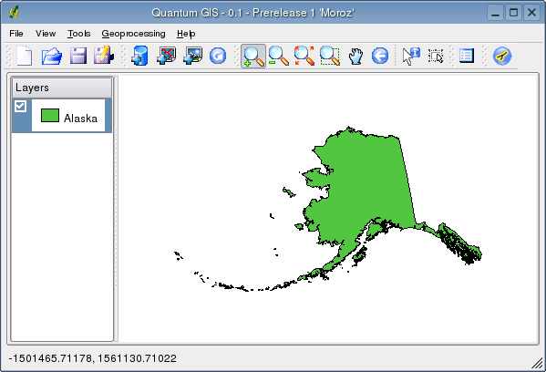
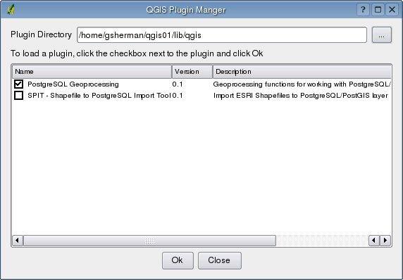
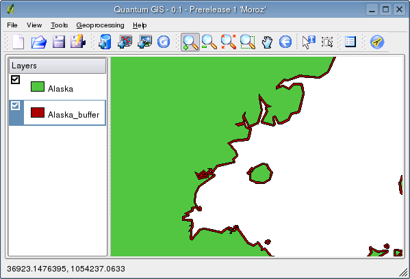
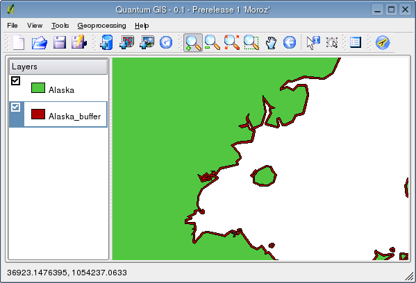

The plugin requires GEOS support compiled into PostGIS and the GEOS library must be installed (see http://geos.refractions.net for details).
| Setting | Explanation |
|---|---|
| Buffer distance in map units | The size of the buffer |
| Table name for the buffered layer | This name will be used when creating the buffered layer in the database |
| Spatial reference ID | The id from the spatial_references table that describes the coordinate system of the data |
| Geometry column | Name for the column to store the geometry for each buffered feature |
| Unique field to use as feature id | Name of the field to use as the primary key for the buffered layer. Select a field name from the list or choose Create unique object id to have the plugin create a primary key field |
| Schema | Choose the schema to use in creating the buffered layer. Only existing schemas are displayed in the drop-down box |
| Add the buffered layer to the map? | Checking this option will cause the buffer layer to be added to the map after processing is complete |
